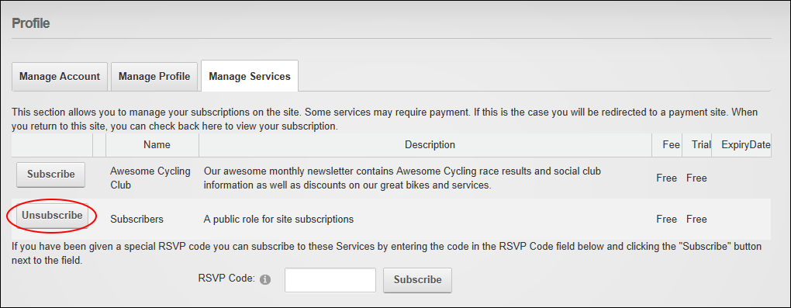

Unsubscribing from a Member Service
How to unsubscribe from a member's service. Unsubscribing from a service removes your access to any modules or pages restricted to subscribers.
- Login to the site. See "Logging into a Site"
- Click on your [Display Name] link (typically located in the top right corner of the site) - OR - Navigate to a ViewProfile module. This displays the user profile page.
- Click the Edit Profile link. This displays the Manage Profile page.
- Select the Manage Services tab. This displays a list of the available services.
- Click the Unsubscribe link beside the service you want to unsubscribe from. This displays the message "You have successfully unsubscribed from the [Service] role."
